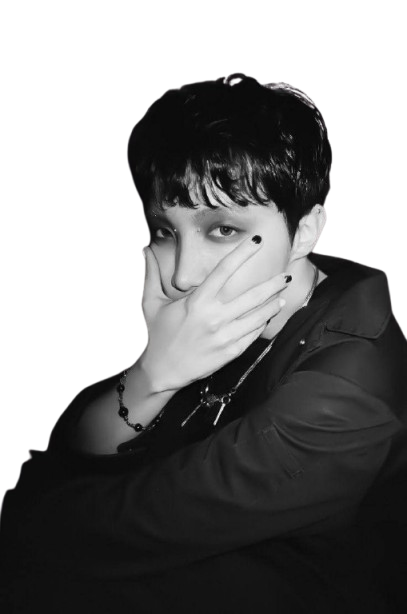

J-Hope
La estética musical de J-Hope es una mezcla versátil de hip hop, funk, electrónica y rock,
con un rap melódico y un estilo único que ha evolucionado desde sus raíces en el street dance
a conceptos más oscuros y diversos en su carrera en solitario.
.png)
Agust D
La estética musical de Agust D (el alter ego de Suga de BTS) se caracteriza por una mezcla de hip-hop
con elementos tradicionales coreanos, como la percusión y la narración del pansori, creando un sonido oscuro y denso.
Visualmente, sus videos musicales a menudo incorporan referencias a la ciudad amurallada de Kowloon,
estilos del género noir de Wong Kar-wai y la paleta de colores "teal and orange", que evocan el crepúsculo
y contrastan lo moderno con lo vintage.
RM
La estética musical de RM (Namjoon) es ecléctica y experimental, evolucionando de un hip-hop más duro
a incorporar influencias de jazz, funk, R&B, indie folk y lofi, con temas melancólicos y reflexivos
que se complementan con colaboraciones y una producción detallada.
Su música se caracteriza por la introspección, la expresión de sentimientos personales y la búsqueda de conectar
con el oyente a través de una narrativa artística y visualmente consistente.